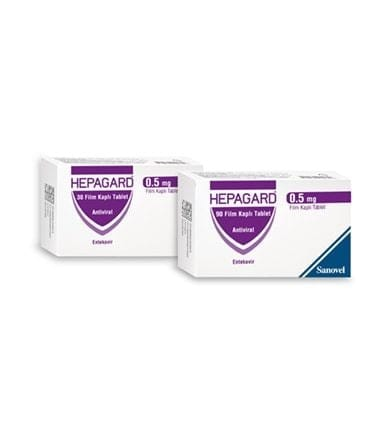

Hepagard 0,5 mg Film Kaplı Tablet, 90 Adet

Ne için kullanılır
KT · Bölüm 1HEPAGARD antiviraller olarak adlandırılan bir ilaç grubuna dahildir. HEPAGARD, erişkinlerde kronik (uzun süreli) hepatit B virüsü (HBV) enfeksiyonunun tedavisinde kullanılır. HEPAGARD karaciğeri hasar görmüş fakat halen düzgün şekilde işlev gösteren (kompanse karaciğer hastalığı) kişilerde ve karaciğeri hasar görmüş ve düzgün şekilde işlev göstermeyen (dekompanse karaciğer hastalığı) kişilerde kullanılabilir. HEPAGARD ayrıca vücut ağırlığı en az 32,6 kg olan çocuklar ve ergenlerde kronik (uzun süreli) HBV enfeksiyonunu tedavi etmek için kullanılır. HEPAGARD, karaciğeri hasar görmüş ancak hala düzgün çalışan (kompanse karaciğer hastalığı) çocuklarda kullanılabilir. HEPAGARD 0.5 mg film kaplı tabletlerin her biri etkin madde olarak 0.5 mg entekavire eşdeğer 0.532 mg entekavir monohidrat içerir. HEPAGARD, beyaz renkli, yuvarlak film kaplı tabletlerdir. Her kutuda 30 veya 90 tablet vardır. HEPAGARD, erişkinlerde hepatit B virüsü (HBV) enfeksiyonunun tedavisinde kullanılır.
Bu ilacı kullanmaya başlamadan önce bu KULLANMA TALİMATINI dikkatlice okuyunuz, çünkü sizin için önemli bilgiler içermektedir. • Bu kullanma talimatını saklayınız. Daha sonra tekrar okumaya ihtiyaç duyabilirsiniz. • Eğer ilave sorularınız olursa, lütfen doktorunuza veya eczacınıza danışınız. • Bu ilaç kişisel olarak sizin için reçete edilmiştir, başkalarına vermeyiniz. • Bu ilacın kullanımı sırasında, doktora veya hastaneye gittiğinizde, doktorunuza bu ilacı kullandığınızı söyleyiniz. • Bu talimatta yazılanlara aynen uyunuz. İlaç hakkında size önerilen dozun dışında yüksek veya düşük doz kullanmayınız.
Hepatit B virüsünün neden olduğu enfeksiyon, karaciğerinize zarar verebilir. HEPAGARD vücudunuzdaki virüs miktarını azaltır ve karaciğerinizin durumunu iyileştirir.